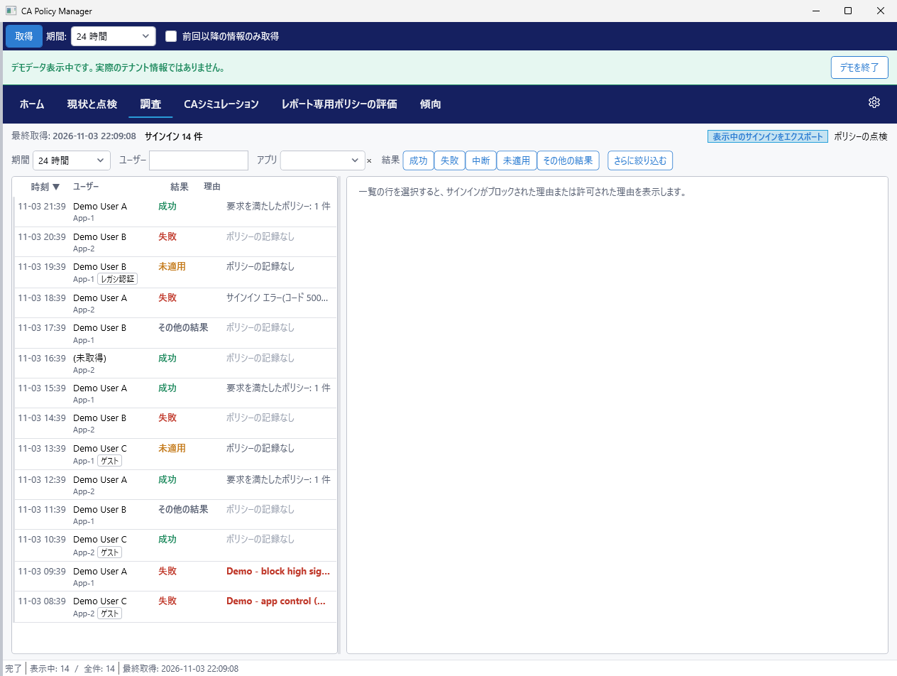
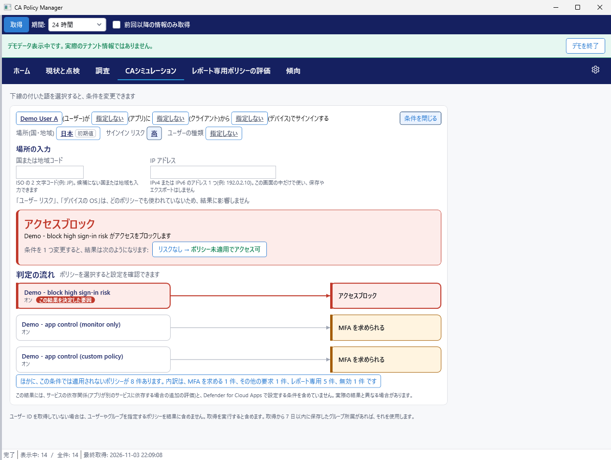
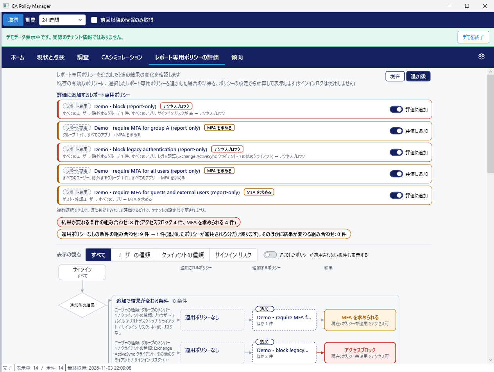
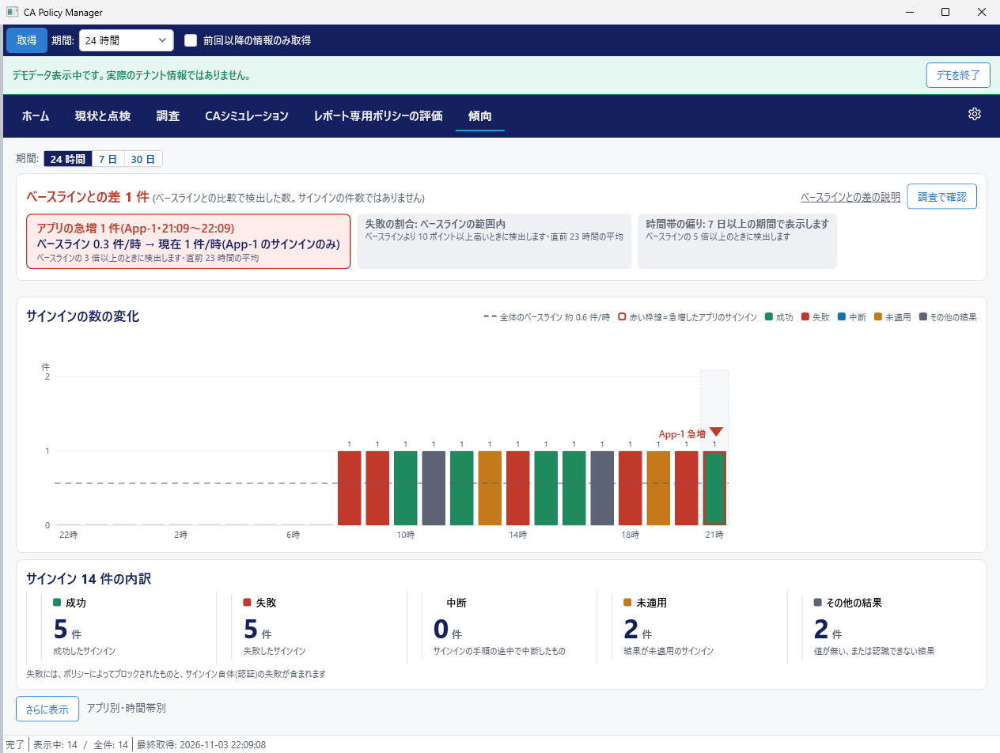
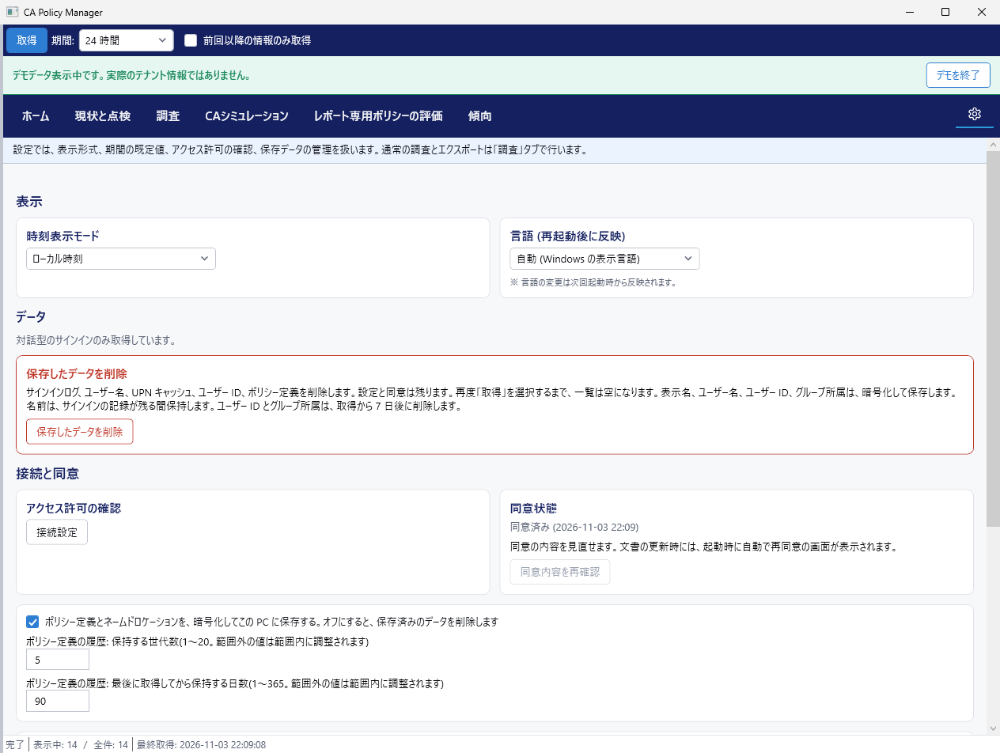

主要な画面の見方
画像はすべてデモの合成データです
ホーム
最初に確認する画面です。データの取得状況、今日の状況、サインインの検索が並びます。今日の状況の 3 つの数は次のとおりです。
- 対応が必要: 推奨ポリシーのうち、満たしていない項目の数
- 適用ポリシーなしの条件: ポリシーの設定から数えた条件の数。ログの件数ではありません。
- ベースラインとの差: ベースラインとの比較で検出した数。サインインの件数ではありません。
サインインの検索には、結果ごとの件数と、ポリシーの記録が無いサインインなどの観点ごとの件数を表示します。選択すると調査を開きます。
適用ポリシーを記録していない旧形式の行があるときは、データの取得状況に「旧形式 N 件」と表示します。旧形式の行は、観点別の件数に含めません。

現状と点検
今のポリシーと推奨の差は、ここで確認します。カテゴリを選択すると、推奨ポリシーを満たしているかを点検します。「現在の設定」と「推奨を適用した場合」を切り替えられます。Microsoft Graph で取得できない設定を含むポリシーは、管理センターでの確認を案内します。

調査
個別のサインインを調べるときは、この画面を使います。一覧を期間、ユーザー、アプリ、結果で絞り込み、行を選択すると、ブロックされた理由または許可された理由を表示します。結果の値が無いサインインは「結果の記録なし」、認識できない値のサインインは「その他の結果」と表示します。「ポリシーの点検」で、ポリシーの構成を確認できます。有償版では、表示中のサインインを CSV と HTML にエクスポートできます。

CAシミュレーション有償版
実際のサインインを待たずに、結果を確認できます。ユーザー、アプリ、クライアント、デバイス、場所、リスクなどの条件を指定すると、結果(アクセスブロック、MFA を求められる、ポリシー未適用でアクセス可など)と判定の流れを表示します。入力した IP アドレスは画面の中だけで使い、保存もエクスポートもしません。この結果は Microsoft の公式の評価ではありません。

レポート専用ポリシーの評価有償版
レポート専用ポリシーを有効にする前に、結果の変化を確認する画面です。既存の有効なポリシーに、選択したレポート専用ポリシーを追加した場合の結果を計算します。サインインログは使わず、ポリシーの設定から計算します。「現在」と「追加後」を切り替えられます。適用ポリシーなしの条件の組み合わせが、追加によって何件減るかも表示します。テナントの設定は変更しません。

傾向
期間を選択すると、サインインの数の変化と内訳(成功、失敗、中断、未適用、その他の結果)を表示します。その他の結果は、値が無い、または認識できない結果です。アプリの急増、失敗の割合、時間帯の偏りを、ベースラインと比較します。

設定
時刻の表示、言語、ユーザーの表示方法(名前、ユーザー名、匿名)、接続設定、緊急アクセス アカウント、保存したデータの削除を扱います。言語の変更は、次回の起動から反映されます。

最終更新: 2026-11-04